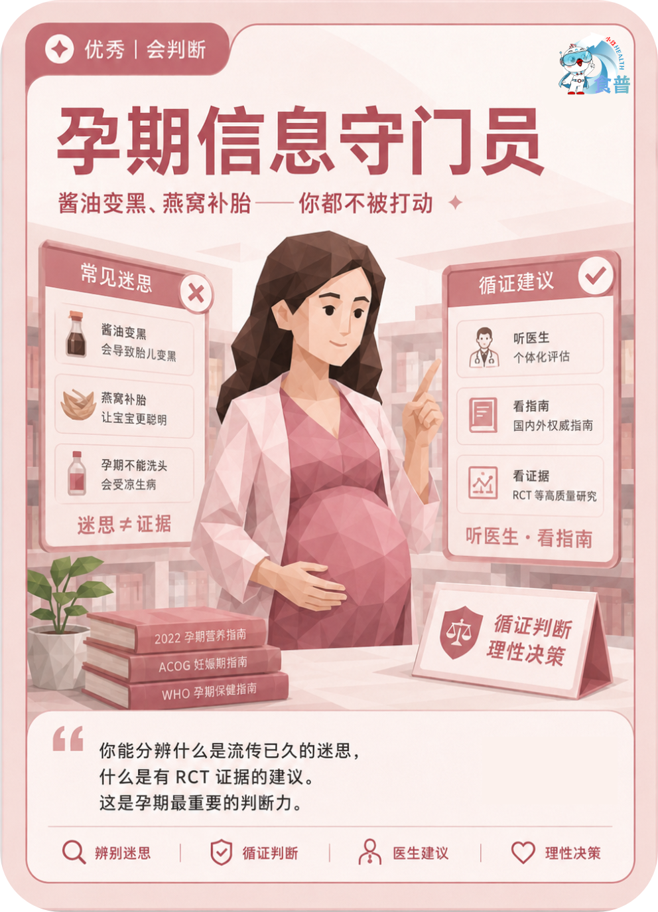

孕育人群
优秀
会判断
P05
孕期信息守门员
酱油变黑、燕窝补胎——你都不被打动
你能分辨什么是流传已久的迷思,什么是有 RCT 证据的建议。这是孕期最重要的判断力。
手机端可点击“打开原图”后长按图片保存；也可以直接长按上方图卡保存。

酱油变黑、燕窝补胎——你都不被打动
你能分辨什么是流传已久的迷思,什么是有 RCT 证据的建议。这是孕期最重要的判断力。
手机端可点击“打开原图”后长按图片保存；也可以直接长按上方图卡保存。